Durabilité
Protection de l’environnement et pratiques touristiques plus responsables.
Projet européen · Erasmus+
Imaginer un tourisme plus intelligent, durable et inclusif grâce à la coopération européenne.
TürkiyeEspagneBelgiqueItalie

01 / Le projet
Ce projet de coopération Erasmus+ explore une évolution du tourisme fondée sur la digitalisation, la durabilité environnementale et une approche plus inclusive. Il met la coopération internationale au service du partage de pratiques et de solutions communes.
4pays
02 / Les axes
Protection de l’environnement et pratiques touristiques plus responsables.
Usage des outils et approches numériques pour accompagner l’évolution du tourisme.
Travail commun entre organisations et pays partenaires.
Développement et partage de nouvelles pratiques et solutions.
03 / Parcours européen
04 / Sur le terrain
Le projet prend forme à travers des activités et des rencontres internationales. Ces temps de travail permettent de confronter les pratiques, de partager des perspectives et de faire avancer des solutions communes.
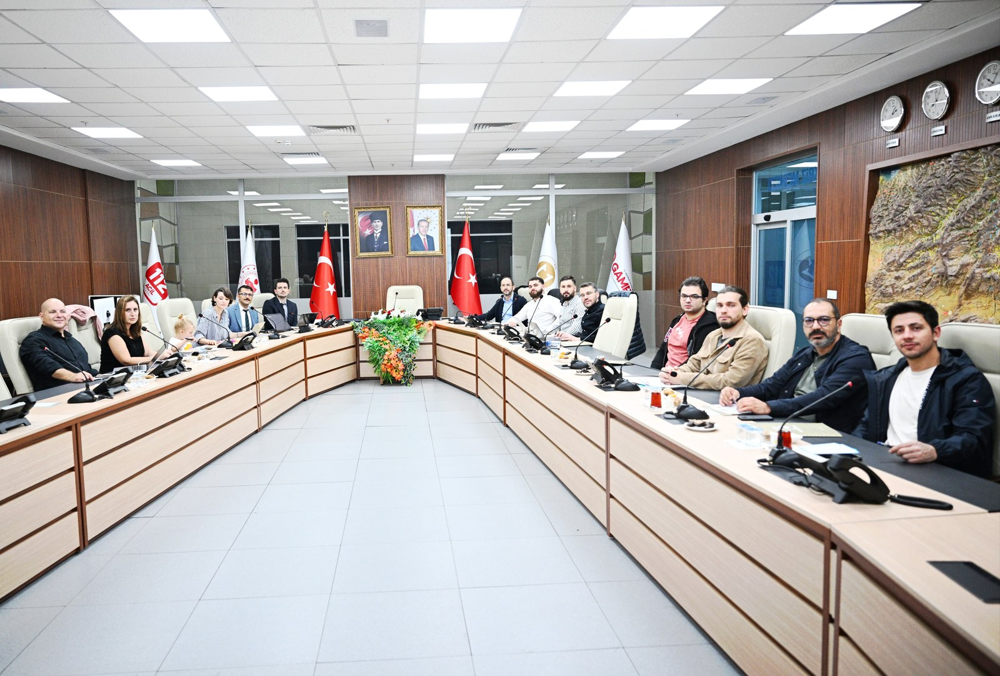
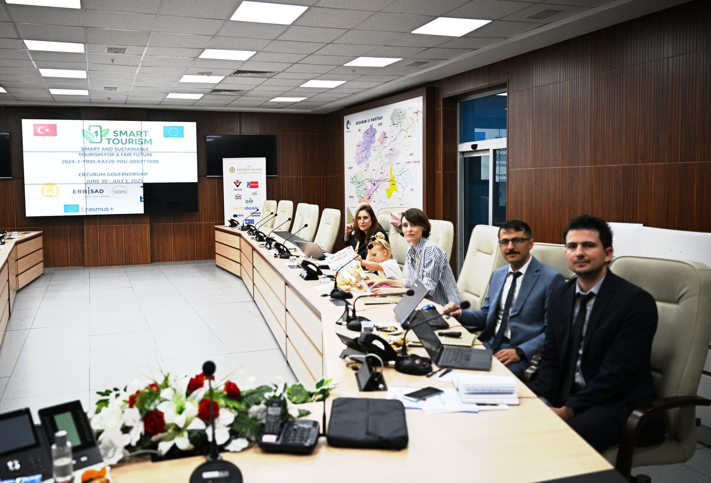
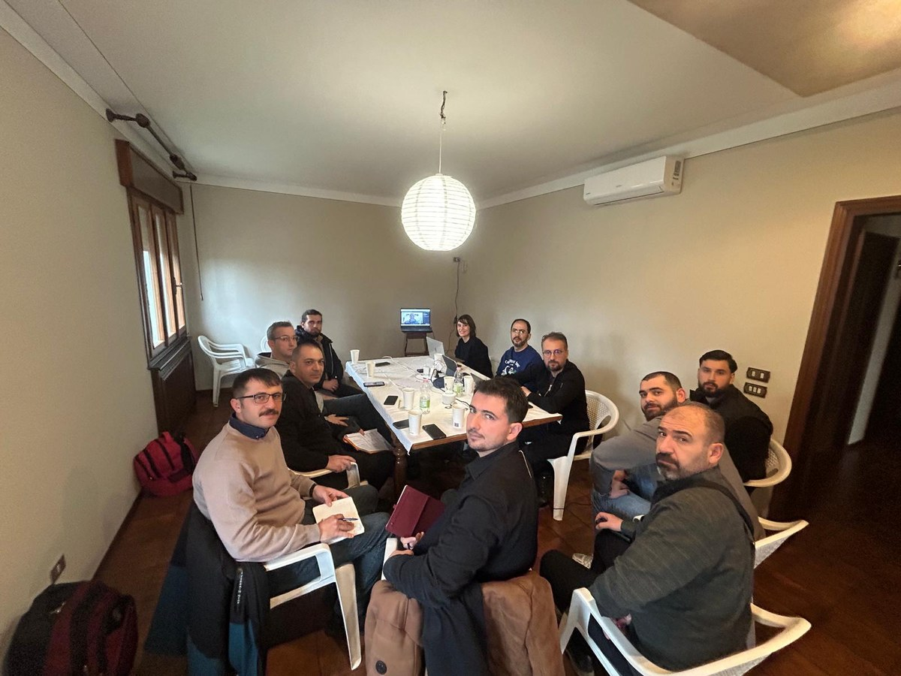
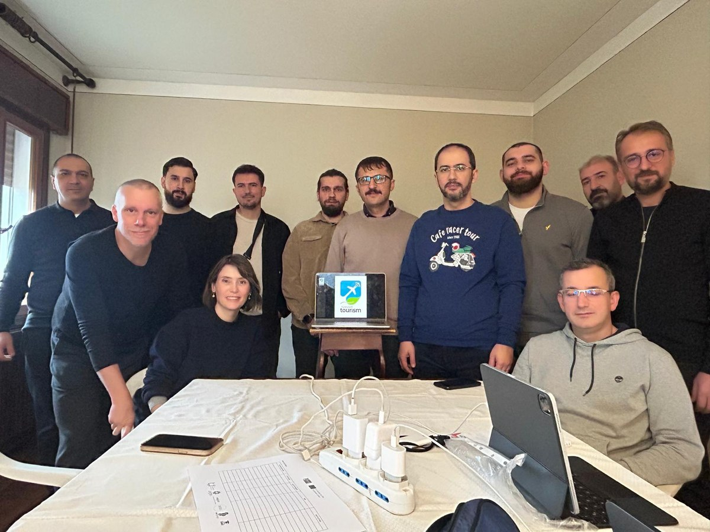
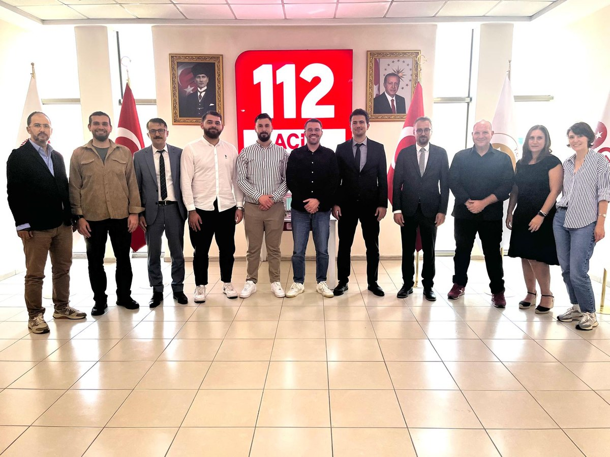
Partenaires du projet
Cinq organisations réunies autour d’une même ambition européenne.
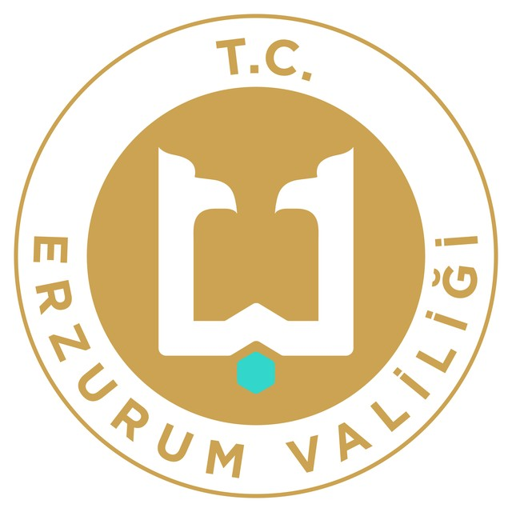
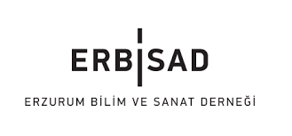
ERBİSAD — Erzurum Bilim ve Sanat Derneği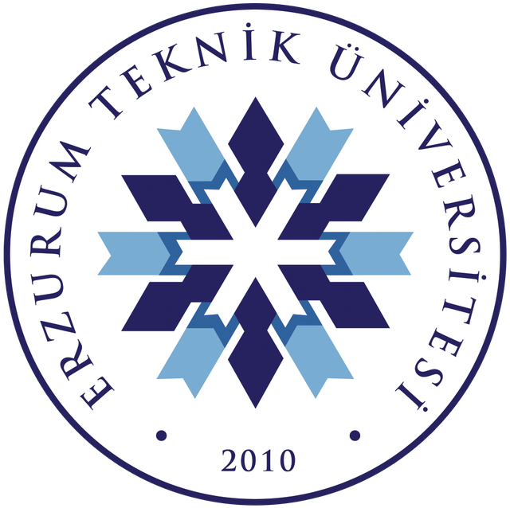
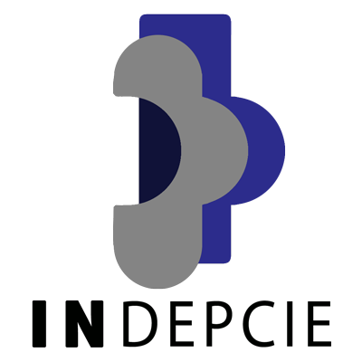
INDEPCIE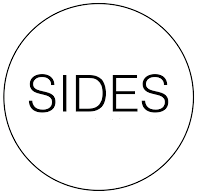
SIDESCadre du projet
Smart & Sustainable Tourism for a Fair Future est un projet de coopération Erasmus+.
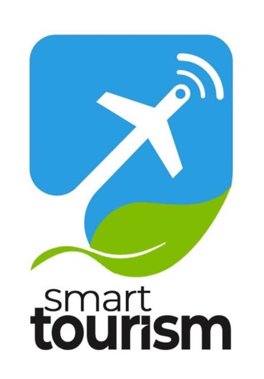